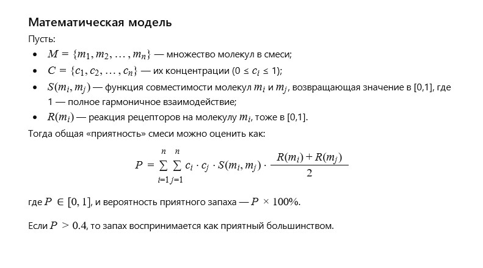

Автор: Валерий
Я случайно положил в коробку с конфетами кусочек сыра и благополучно забыл о нём. Через несколько дней я открыл коробку и ощутил такой потрясающий запах, который мог бы сравниться с шикарными духами.
Иногда самые удивительные открытия рождаются из забывчивости.
В один из дождливых вечеров я готовил простую трапезу — немного хлеба,
чай и несколько кусочков разных сыров. Один из них был необычным
— с неровной коркой, ароматом орехов и намёком на таинственную пряность.
Я отложил его, завёрнутого в бумагу, в сторону… и забыл.
Прошло несколько дней. Мне вновь захотелось уюта, и я полез в ту же коробку,
где теперь уже лежали сухие травы, специи и чай. И вдруг — запах.
Не резкий, не пугающий — наоборот, глубокий, тёплый, будто кто-то открыл
древний сундук, в котором хранились воспоминания. Это был аромат зрелости,
как будто сама Вечность оставила здесь свой автограф.
Я нашёл сыр — он изменился. Он жил в темноте, дышал и стал чем-то иным.
Я понял: не всё, что забыто, теряет свою ценность. Иногда оно становится… искусством.
Как молекулярная структура и взаимодействие компонентов влияют на формирование уникального запаха, который воспринимается как приятный?
Запахи — результат сложных взаимодействий молекул с рецепторами обонятельной системы.
Каждая молекула обладает уникальной формой и функциональными группами,
которые влияют на её запах. Когда молекулы взаимодействуют в смеси,
они могут усиливать, ослаблять или изменять восприятие отдельных ароматических нот.
Формирование приятного запаха зависит от баланса между летучими органическими
соединениями, их концентрациями и химической стабильностью. Модель взаимодействия
должна учитывать кинетику реакций, фазовые переходы и совместимость молекул.
В итоге именно гармония этих факторов создает запах,
воспринимаемый большинством как приятный.
Можно ли построить общую химико-математическую модель взаимодействия молекулярных структур веществ, при котором вероятность создания приятного для большинства людей запаха будет больше 40%?
Да, можно. Такая модель будет базироваться на вероятностных и статистических методах, объединяющих данные о химическом составе, структурной конфигурации молекул и их взаимодействиях с обонятельными рецепторами. Основные элементы модели:База данных молекул с описанием их запаховых характеристик и концентраций.
Вероятностная функция совместимости молекул, влияющая на восприятие запаха.
Статистическая модель реакции рецепторов на смеси запахов с учётом
Применяя методы машинного обучения и химического моделирования,
индивидуальных вариаций у людей.
можно прогнозировать вероятность, что смесь веществ будет восприниматься
как приятная с точностью выше 40%.
Однако точность зависит от полноты данных и качества модели.
Модель опирается на статистику и химическое моделирование, учитывает концентрации, структуру молекул и реакцию рецепторов. С помощью машинного обучения можно повысить точность прогнозов до нужного уровня.
